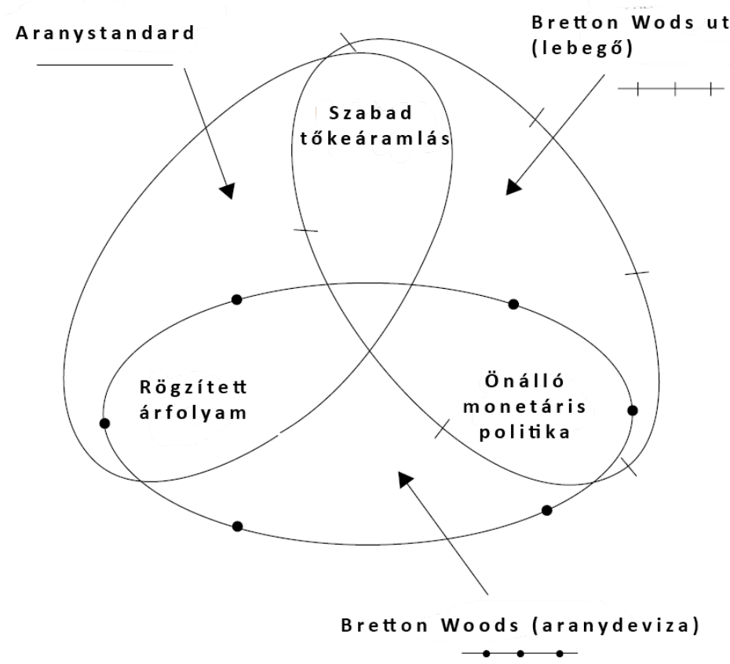

12. fejezet · diák: 186–196
Nemzetközi monetáris rend
A nemzetközi gazdasági rend másik pillére a pénz (11. fejezet). Ha egy magyar cég külföldön vásárol, fizetnie kell valamivel – de mivel, és milyen árfolyamon? Erre a kérdésre a történelem során többféle választ adtak, és mindegyiknek megvolt az ára.
A világpénz előnyei 186–187. dia
Ha egy magyar vállalat szaúd-arábiai olajat vásárol, nem kell külön forint–riál piacot létrehozni. Mindkét fél dollárban állapodik meg, mert a dollárt könnyű venni, eladni, megtakarítani és más ügyletekben felhasználni.
Világpénz: olyan fizetőeszköz, amelyet a különböző országok szereplői széles körben elfogadnak a kereskedelmi ügyletekben, a hitelezésben és a tartalékképzésben.
A világpénz gazdasági előnyei:
- csökkenti a pénzváltás és a nemzetközi fizetések költségét;
- mérsékli az árfolyamkockázatot;
- közvetlenül összehasonlíthatóvá teszi az árakat;
- megkönnyíti a kereskedelmet és a nemzetközi hitelezést;
- nagy, likvid pénzügyi piac kialakulását segíti;
- az elfogadottsága önmagát erősíti: mindenki azért használja, mert mások is használják.
Ez ugyanaz a logika, mint a búzából lett pénz a 6. fejezetben, csak nemzetközi szinten: a világpénz a nemzetközi csere tranzakciós költségét csökkenti. Az önerősítő elfogadottság miatt nehéz leváltani – a dollár ezért maradt világpénz az aranyalap 1971-es vége után is.
A fejezet kérdése: milyen nemzetközi pénzrendszer segíti a kereskedelmet és a fejlődést – és miért nem lehet egyszerre stabil árfolyamot, szabad tőkeáramlást és önálló gazdaságpolitikát kapni?
Útiterv
✏️ Gondold végig – Világpénz
- Miért nehéz leváltani egy világpénzt, ha már egyszer elterjedt?
Mintaválasz
Mert az elfogadottsága önmagát erősíti: mindenki azért használja, mert mások is használják, és ezért a piaca nagy és likvid. Egy új pénznek először el kellene érnie ezt az elfogadottságot – addig viszont senkinek sem éri meg átállni.
Az aranystandard 188–189. dia
Az első modern világpénzrendszer az arany volt. 1819-ben Nagy-Britannia visszatért az aranyalapra, és a 19. század végére a fejlett világ nagy része követte.
Az aranystandard három fő sajátossága:
- szabad átváltás aranyra rögzített árfolyamon – aranyparitás;
- nincs tőkeáramlási (arany-) korlát – az arany a világpénz;
- a pénz értékét az aranytartalék (aranytartalom) adja.
Kidolgozott példa: ha 1 korona aranytartalma 0,3 gramm arany (1892-től), 1 fonté pedig 7 gramm, akkor 1 font = 7 / 0,3 ≈ 23 korona. Az árfolyamot tehát az aranytartalmak aránya rögzíti.
Hume aranypont-mechanizmusa
A kortársak mélyen hittek abban, hogy az aranystandard a tökéletes rendszer, mert magától egyensúlyba hozza a nemzetközi fizetéseket. A mechanizmust David Hume írta le:
- Ha Magyarországnak kereskedelmi többlete van, a magyar cégek külföldi valutához jutnak.
- Ezeket külföldön aranyra váltják, és behozzák Magyarországra. (Közvetlenül is átválthatnák forintra – a példa a mai pénznemet használja –, de akkor a forint felértékelődne, így inkább aranyat vesznek, és azt hozzák be.)
- Az aranytöbblet Magyarországon növeli a pénz mennyiségét – nő a pénzkínálat.
- A növekvő pénzkínálat hatására emelkednek a magyar árak.
- A drágább hazai áruk miatt a kereslet a külföldi termékek felé fordul – a fizetési mérleg kiegyensúlyozódik.
kereskedelmi többlet → aranybeáramlás → több pénz → magasabb hazai árak → több import, kevesebb export → egyensúly
Az aranystandard így egyszerre biztosította (1) a stabil árfolyamot, (2) az árváltozáson keresztül automatikusan kiegyensúlyozódó fizetési mérleget és (3) a szabad aranyáramlást.
A mechanizmus kulcsa, hogy az árak rugalmasan alkalmazkodnak. Ha a deficites országban az áraknak és a béreknek csökkenniük kellene, de nem csökkennek, akkor nem egyensúly jön, hanem munkanélküliség és aranykiáramlás – ez lesz a 20. század tanulsága.
Bukás – feltámadás – bukás
- Az első világháborúban minden ország felfüggesztette az aranykonverziót, és pénznyomtatással fedezte a háborús kiadásokat → erőteljes infláció.
- 1919-ben az USA visszatért az aranyalapra, idővel a többi ország is követte. A kérdés: milyen paritáson?
- Ha a háború előttin, akkor a magas infláció miatt a belső árak lényegesen magasabbak lesznek, mint másutt → erős ár- és bércsökkenésnek kell bekövetkeznie.
- Ha a háború előttinél alacsonyabb aranytartalmon (leértékelve), az egyeseknek veszteséget okoz, pl. mert a hazai vagyon és jövedelem vásárlóértéke csökken.
- Nagy-Britannia 1925-ben az eredeti paritáson tért vissza, Franciaország leértékelten.
- Tanulság: az árak nem alkalmazkodnak azonnal → az eredeti paritáson visszatérő országok drágák maradnak, sokat importálnak, és kiáramlik az arany.
- A világválság idején sorra kiléptek az országok: Nagy-Britannia 1931, USA 1933 (belső aranytilalom), Franciaország 1936.
✏️ Gondold végig – Aranystandard
- Írd le Hume aranypont-mechanizmusát egy kereskedelmi hiányos ország szemszögéből!
Mintaválasz
A hiányos ország többet importál, mint amennyit exportál, ezért aranyat kell fizetnie → kiáramlik az arany → csökken a pénzmennyiség → csökkennek a hazai árak → a hazai áruk olcsóbbak lesznek, nő az export, csökken az import → a fizetési mérleg kiegyensúlyozódik. Feltétel: az áraknak és béreknek csökkenniük kell.
- Miért volt hiba Nagy-Britannia 1925-ös visszatérése az eredeti paritásra?
Mintaválasz
A háborús infláció után a brit árak magasabbak voltak a háború előttinél, ezért az eredeti paritáson a font túlértékelt lett: a brit áruk drágák maradtak, sokat importáltak, kiáramlott az arany. Az áraknak és béreknek csökkenniük kellett volna, de nem csökkentek gyorsan – munkanélküliség és pangás lett a következmény.
A válság tanulsága: a trilemma 190–191. dia
A két világháború közötti válság legfontosabb elméleti tanulsága a monetáris trilemma (lehetetlen hármasság): három kívánatos cél közül egyszerre csak kettő érhető el.
Trilemma: a rögzített árfolyam, a szabad tőkeáramlás és az önálló monetáris (kamat)politika egyszerre nem tartható fenn – egyiket fel kell adni.
| Mit választ az ország? | Mit kell feladnia? | Rendszer |
|---|---|---|
| rögzített árfolyam + szabad tőkeáramlás | az önálló monetáris politikát | aranystandard |
| rögzített árfolyam + önálló monetáris politika | a szabad tőkeáramlást | aranydeviza-rendszer (Bretton Woods) |
| önálló monetáris politika + szabad tőkeáramlás | a rögzített árfolyamot | lebegő árfolyamok |

Miért nem megy mindhárom? Két példa:
- Aranystandard (fix árfolyam + szabad tőkeáramlás): ha pang a gazdaság, és alacsony kamattal akarok beruházást élénkíteni, mindenki külföldre viszi a pénzét, ahol magasabb a kamat (aranykiáramlás) – így még kevesebb pénz marad a beruházásokra. Önálló kamatpolitika tehát nem lehetséges.
- Lebegő árfolyam (önálló monetáris politika + szabad tőkeáramlás): ha kamatcsökkentéssel élénkítek, a befektetők külföldre viszik a pénzüket, és ezért leértékelődik a valutám. A kamatpolitika működik, de az árfolyam nem lehet fix.
A mintazh 12. kérdése: az aranystandard azért korlátozta a nemzeti gazdaságpolitika mozgásterét, mert a rögzített paritás és a szabad tőkeáramlás mellett nem lehetett önálló kamatpolitikát folytatni.
✏️ Gondold végig – A trilemma
- Egy ország rögzíteni akarja az árfolyamát, és közben válság idején csökkenteni akarja a kamatot. Mit kell feladnia, és miért?
Mintaválasz
A szabad tőkeáramlást. Ha a tőke szabadon mozoghatna, az alacsony kamat miatt a befektetők kivinnék a pénzüket, és ez nyomás alá helyezné a rögzített árfolyamot. Tőkekorlátozással (mint Bretton Woodsban) viszont a fix árfolyam és az önálló kamatpolitika együtt fenntartható.
- Melyik trilemma-csúcsot választja Magyarország a forinttal, és melyiket egy euróövezeti ország?
Mintaválasz
A forint lebegő árfolyamú: Magyarország az önálló monetáris politikát és a szabad tőkeáramlást választja, a fix árfolyamot feladja. Egy euróövezeti ország az övezeten belül fix árfolyamot és szabad tőkeáramlást választ, és feladja az önálló monetáris politikát (azt az Európai Központi Bank végzi).
Bretton Woods és bukása 192–193. dia
1944. július 1–22. között, még a háború alatt, a szövetséges országok az amerikai Bretton Woodsban megtervezték a háború utáni pénzügyi rendet. A szakértők nem tudtak szabadulni attól a gondolattól, hogy az akadálytalan nemzetközi kereskedelemhez elengedhetetlen a rögzített árfolyam.
Aranydeviza-rendszer (Bretton Woods):
- 1 uncia arany = 35 dollár; minden más valuta értéke a dollárhoz rögzített. Ezt valutapiaci beavatkozással vagy monetáris politikával stabilizálják.
- A nemzeti bankok aranyban és dollárban tartalékolnak, hogy a dollár/valuta árfolyamot stabilan tarthassák. A dollárt a központi bankok a Fednél aranyra válthatták.
- Létrehozták az IMF-et (Nemzetközi Valutaalap), amely segít, ha egy ország tartalékai kimerülnek.
- A tőkeáramlás korlátozott: a valuták konvertibilitása csak a folyó fizetési mérleg tételeire (áruk, szolgáltatások) volt biztosított, a pénzügyi mérlegre (pénzügyi eszközök) nem.
- Az árfolyamokat felül lehetett vizsgálni (leértékelés lehetősége) – ezzel például a britek és a franciák többször is éltek.
Bretton Woods bukása
A legnagyobb probléma: ha az USA gazdasága nem stabil (nincs árstabilitás), az a többi gazdaságot is destabilizálja.
- 1965-től a vietnámi háború kiadásai és Lyndon B. Johnson jóléti programja növekvő költségvetési hiányhoz és növekvő pénzmennyiséghez vezetett → magas amerikai infláció (2–6%).
- A növekvő amerikai árak miatt az amerikai export csökkent, az import nőtt.
- A fizetési mérleg hiánya aranykiáramláshoz vezetett.
- A többi ország vagy importálta az inflációt (destabilizáló), vagy felértékelte a valutáját (lassította a növekedést).
amerikai költségvetési hiány → infláció → romló amerikai fizetési mérleg → aranykiáramlás → a dollár aranyfedezete elfogy → a rendszer összeomlik
1971: megszűnt a dollár aranyra való átválthatósága – az aranyalap vége. 1973: a nagyobb valuták árfolyama lebegő rendszerben alakul.
Az 1971-es döntést Nixon elnök jelentette be („Nixon-sokk”). A probléma szerkezeti volt (Triffin-dilemma): a világnak egyre több dollárra volt szüksége tartalékként, de minél több dollár volt kint, annál kevésbé lehetett hihető, hogy az USA mindet aranyra tudja váltani.
✏️ Gondold végig – Bretton Woods
- A trilemma három céljából melyiket adta fel a Bretton Woods-i rendszer, és miért?
Mintaválasz
A szabad tőkeáramlást: a valuták csak a folyó fizetési mérleg tételeire voltak konvertibilisek. Így a rögzített árfolyam mellett az országok önálló monetáris politikát folytathattak – a két világháború közötti tapasztalat után ez volt a fontosabb.
- Miért omlott össze a Bretton Woods-i rendszer?
Mintaválasz
Mert a rendszer kulcsa az amerikai stabilitás volt. Az 1960-as évek közepétől a vietnámi háború és a jóléti programok miatt nőtt az amerikai infláció, romlott a fizetési mérleg, kiáramlott az arany, és a többi ország vagy importálta az inflációt, vagy felértékelt. 1971-ben megszűnt a dollár aranyra válthatósága, 1973-tól lebegtek a valuták.
Lebegő árfolyamok, az euró és a monetáris rezsimek 194–196. dia
Az 1970-es évektől két fő folyamat zajlik:
1. Globális szinten: lebegő árfolyamok – és a világkereskedelem nem omlik össze.
Bebizonyosodott, hogy nem kell rögzített árfolyam a sikeres nemzetközi kereskedelemhez. Közben egyre fontosabb lett az önálló monetáris politika iránti igény.
2. Regionális szinten: monetáris uniók – az euróövezet
- a zónán belül rögzített árfolyam és szabad tőkeáramlás – nincs önálló monetáris politika;
- nincs aranyalap;
- míg a Bretton Woods-i rendszer kulcsa az amerikai stabilitás volt, az euróövezeté a német gazdaság.
Monetáris rezsimek
| Időszak | 1870–1913 | 1919–30 | 1931–39 | 1950–73 | 1975–2000 | 2001– |
|---|---|---|---|---|---|---|
| Árfolyamrendszer | rögzített | lebegő, majd rögzített | menedzselt lebegtetés | kiigazíthatóan rögzített | lebegő, vagy német márkához rögzített | lebegő vagy valutaunió |
| Nemzetközi tőkeáramlás | magas | magas | alacsony | alacsony | növekvő, majd magas | magas |
| Kamatkülönbségek | alacsony | magas, de csökkenő | magas | magas | csökkenő, majd alacsony | alacsony |
| Nominális árfolyam-ingadozás | nincs | vegyes | van | van | van | valutaunión belül nincs |
| A valuták konvertibilitása | igen | igen | korlátozások | csak a folyó fizetési mérleg tételeire | igen | igen |
| Inflációs ráták | egyformák | nagy különbségek | nagy különbségek | jelentős különbségek | jelentős különbségek | az 1990-es évektől hasonló |
Olvasd a táblázatot a trilemmával! 1870–1913 (aranystandard): fix árfolyam és magas tőkeáramlás – egyforma infláció, mert nincs önálló monetáris politika. 1950–73 (Bretton Woods): kiigazítható fix árfolyam, alacsony tőkeáramlás – eltérő inflációs ráták, mert a monetáris politika önálló. 2001-től: lebegés vagy valutaunió és magas tőkeáramlás.
✏️ Gondold végig – Lebegő árfolyamok
- Mit cáfolt a lebegő árfolyamok korszaka?
Mintaválasz
Azt a Bretton Woodsban még uralkodó meggyőződést, hogy a nemzetközi kereskedelemhez rögzített árfolyam kell. 1973 után a valuták lebegtek, a világkereskedelem mégsem omlott össze, sőt bővült.
- Miért mondjuk, hogy az euróövezet kulcsa a német gazdaság?
Mintaválasz
Mert az övezet tagjai közös monetáris politikát kapnak, amely a legnagyobb, legstabilabb gazdaság (Németország) helyzetéhez igazodik leginkább – ahogy Bretton Woods az amerikai gazdaság stabilitásán állt. Ha a kulcsgazdaság és a többiek helyzete eltér, a közös kamat egyeseknek túl szigorú, másoknak túl laza lehet.
Összefoglalás: a nemzetközi gazdasági rend mérlege 196. dia
- A közös szabályok csökkentik a határokon átnyúló tranzakciós költségeket.
- A nyitottság haszna és alkalmazkodási terhe országok és csoportok között egyenlőtlenül oszlik meg.
- Árfolyam-stabilitás, szabad tőkeáramlás és önálló monetáris politika egyszerre nem tartható fenn.
- A nemzetközi rezsimek válságok, hatalmi átrendeződések és új alkuk nyomán változnak.
Válasz a fejezet kérdésére: a világpénz és a közös szabályok csökkentik a nemzetközi csere költségét, ezért segítik a kereskedelmet. De a trilemma miatt minden rendszer választ: az aranystandard az önálló monetáris politikát, Bretton Woods a szabad tőkeáramlást, a lebegő rendszer a fix árfolyamot adta fel. A rendszerek válságokban dőltek meg (világválság, amerikai infláció), és a hatalmi viszonyok változásával alakultak át.
Esszéhez: ha ezt látod → ezt használd
| Ha az esetben ez áll… | …akkor ezt a fogalmat / mechanizmust használd |
|---|---|
| Egy ország fix árfolyamot tart, de nem tud kamatot csökkenteni | trilemma (→) |
| Tőkekorlátozás + rögzített árfolyam | Bretton Woods, aranydeviza-rendszer (→) |
| Kereskedelmi többlet → pénzbőség → infláció | Hume aranypont-mechanizmusa (→) |
| Túlértékelt valuta, kiáramló tartalékok, munkanélküliség | visszatérés a háború előtti paritásra (Nagy-Britannia, 1925) (→) |
| A vezető gazdaság inflációja más országokba „exportálódik” | Bretton Woods bukása (→) |
| Közös valuta, közös kamat | monetáris unió, euróövezet (→) |
| Egy valutát mindenki használ nemzetközi ügyletekben | világpénz, önerősítő elfogadottság (→) |
Kapcsolódások
- Világrend és hegemónia (1. fejezet): Bretton Woods az amerikai hegemónián állt.
- A pénz funkciói, a jegybank (6. fejezet).
- A nagy válság és a keresleti sokk (7. fejezet).
- Kereskedelempolitika, vámháború 1930-ban (11. fejezet).
- Keynes, a konjunktúrapolitika és a stagfláció (13. fejezet).